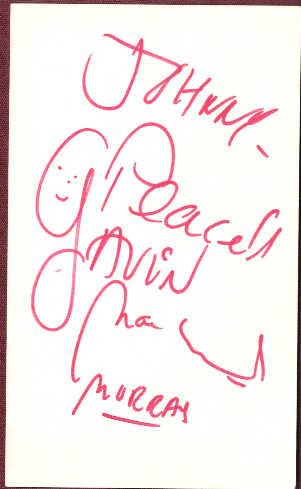

Product No. HEA-0309
$75
Shipping: $8.95
Description
Signed 3x5 index card. Inscribed.
Full Description
Gavin MacLeod (Deceased) was an American actor best known for his memorable television roles on "The Mary Tyler Moore Show" and "The Love Boat." Born February 28, 1931, in Mount Kisco, New York, MacLeod built a long career in film and television. He appeared in movies including "Operation Petticoat," "The Sand Pebbles," and "Kelly's Heroes." MacLeod became widely known for portraying news writer Murray Slaughter on the acclaimed sitcom "The Mary Tyler Moore Show." He later achieved even greater fame as Captain Merrill Stubing on the popular television series "The Love Boat," which ran from 1977 to 1986 and became one of the most recognizable TV programs of its era. His television career also included numerous guest appearances on classic series such as "Hogan's Heroes," "Perry Mason," and "McHale's Navy." Gavin MacLeod died on May 29, 2021, at age 90. His strong association with "The Love Boat," "The Mary Tyler Moore Show," classic television, and Hollywood entertainment makes his autograph especially appealing to collectors of vintage TV memorabilia and celebrity autographs.
Condition
Excellent condition